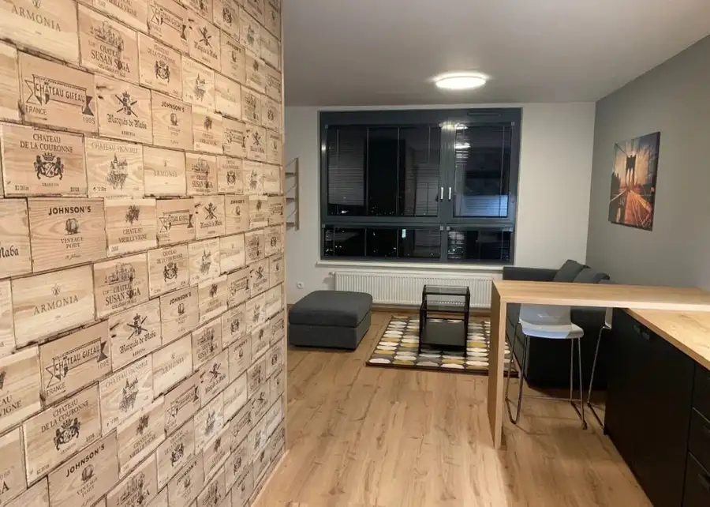
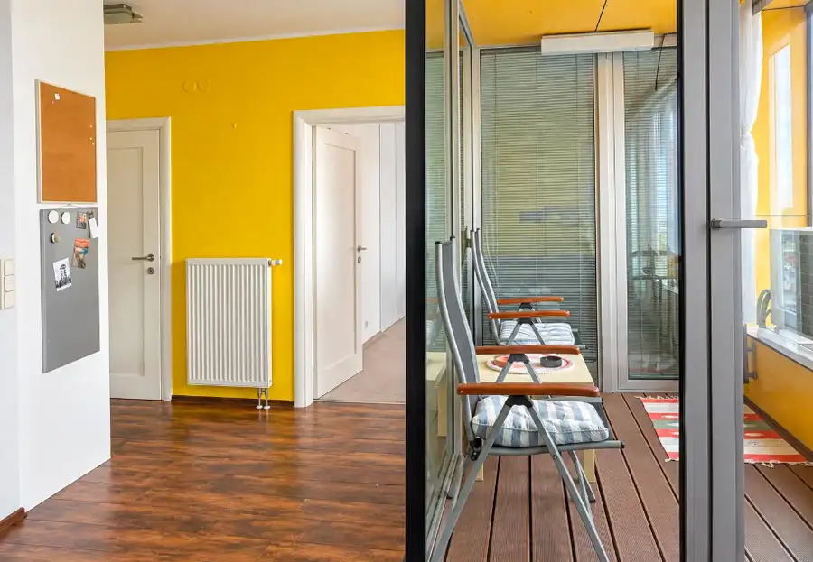

MDG | garsónky v Devínskej Novej Vsi
Devínska Nová Ves, Bratislava
- Plocha30 m²
- Poschodie3. z 7
- StavČiastočná rekonštrukcia
- VlastníctvoOsobné
- Energetická triedaA
O nehnuteľnosti
Realitná kancelária MDG Reality ponúka na prenájom praktickú garsónku s úžitkovou plochou 30 m² a veľkým balkónom o výmere 8 m² na ulici Jána Jonáša v mestskej časti Bratislava – Devínska Nová Ves, v bezprostrednej blízkosti areálu Volkswagen. BYTTyp: GarsónkaÚžitková plocha: 30 m²Balkón: Áno (8 m²)Lokalita: Bratislava – Devínska Nová Ves, ulica Jána Jonáša VÝHODYpriestranný balkón s výmerou 8 m²samostatná kúpeľňa a samostatná toaletapraktická dispozícia s oddeľujúcou haloustrategická poloha v bezprostrednej blízkosti VWvhodný pre jednotlivcavýborná dostupnosť a pokojné bývanie DISPOZÍCIAByt pozostáva zo vstupnej haly, svetlej obytnej izby, samostatnej kúpeľne a samostatného WC. Z izby je priamy prístup na priestranný balkón. VYBAVENIEByt sa prenajíma so základným vybavením zabezpečujúcim pohodlné každodenné bývanie. LOKALITAUlica Jána Jonáša v Devínskej Novej Vsi sa vyznačuje vynikajúcou polohou pre zamestnancov v okolitých priemyselných a biznis zónach (najmä Volkswagen). V blízkosti sa nachádza kompletná občianska vybavenosť, obchody, služby a zastávky MHD. CENA: 450 € / mesiac + 100 € energie (cena platná pre 1 osobu) V prípade záujmu nás neváhajte kontaktovať, radi pre Vás zorganizujeme obhliadku. Maksim Gubanov, Maklér+421 944 575 933gubanov@mdgreality.sk Text, 3D obhliadka a fotografie sú autorským dielom a majetkom realitnej kancelárie MDG Reality.
Parametre
| Cena vrátane energií | Áno |
|---|---|
| Druh | Garsónka |
| Dátum zverejnenia | 12. 10. 2026 |
| Energetický certifikát budovy | A |
| Energie | 100 |
| Podlažie | 3 |
| Počet izieb / miestností | 1 |
| Počet nadzemných podlaží | 7 |
| Rok výstavby | 2000 |
| Stav nehnuteľnosti | Čiastočná rekonštrukcia |
| Typ | Prenájom |
| Typ konštrukcie | Iná |
| Umiestnenie | Ďalšie nadzemné podlažie |
| Vlastníctvo | Osobné |
| Úžitková plocha | 30 m² |
Kde to je


Mohlo by Vás zaujímať

BytNové10 Cena dohodouMDG | Prenajmem byt s panoramatickym vyhladom Ružinov, Bratislava 2-izbový48 m²16. podlažie Realitná kancelária MDG Reality ponúka na prenájom moderný, mimoriadne svetlý a kompletne zariadený 1,5-izbový byt s úžitkovou plochou 48 m², terasou…
BytNové10 1 250 €MDG | Priestranný a tichý 2-izbový byt v Octopuse Ružinov, Bratislava 2-izbový66 m²10. podlažie Realitná kancelária MDG Reality ponúka na prenájom svetlý, priestranný a vkusne zariadený 2-izbový byt s úžitkovou plochou 66 m² na 10. poschodí v…